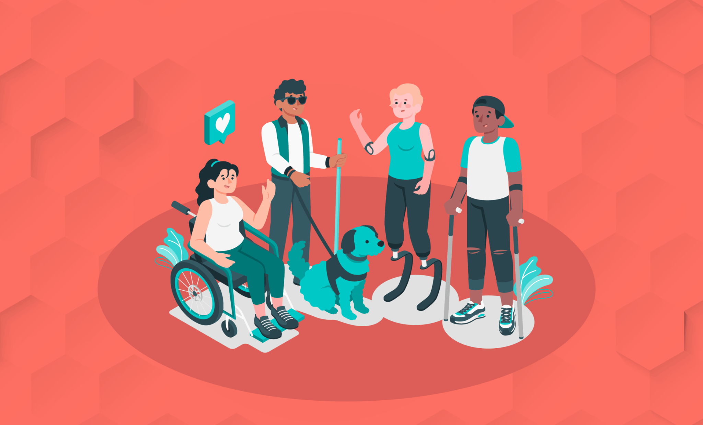

Espaços acessíveis
Ambientes planejados para diferentes formas de locomoção e percepção.
Conhecer acessibilidade física →INCLUSÃO COMEÇA COM ACESSO
A acessibilidade permite que todas as pessoas participem da sociedade com autonomia, segurança e dignidade.
Descubra como fazer a diferença
ENTENDA O TEMA
Acessibilidade é a condição de alcançar e utilizar, com segurança e autonomia, espaços, serviços, informação, comunicação e tecnologias.
Ambientes planejados para diferentes formas de locomoção e percepção.
Conhecer acessibilidade física →Conteúdos digitais que podem ser percebidos e utilizados por diferentes pessoas.
Conhecer acessibilidade digital →Mais de uma maneira de receber e transmitir mensagens e ideias.
Conhecer comunicação →UM COMPROMISSO COLETIVO
Quando removemos barreiras, ampliamos oportunidades para pessoas com e sem deficiência.